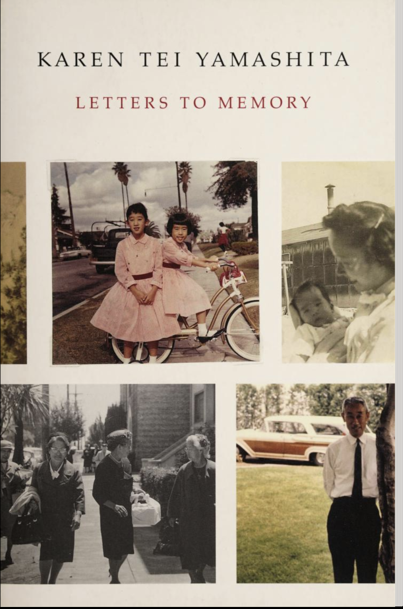
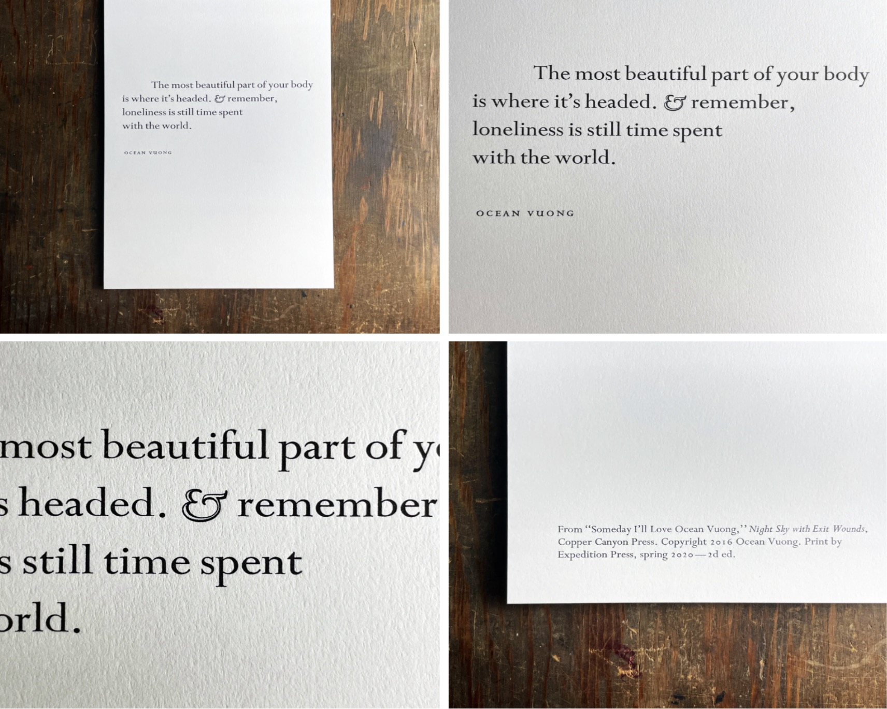

Narratives: World and Images
Words and Images as Narrative Structure 001
The concept of body archives is rather unorthodox compared to more traditional mediums such as archives constructed with language or images. Yet in comparison, the body archives seem more anchored and aligned to our ontological structures, embodying a raw truth and a brutal honesty that could be poetic and traumatic.
Based on Juliette Singh’s narratives in No Archives Will Restore You, I find the body archives to be closer to truth compared to traditional means. Linguistic narrations, very often full of metaphors, metonyms, anthropomorphisms that’s rhetorically heightened, transferred, and adorned, always retain a certain distance between the so-called truth, or the “things-in-themselves”. Photographic archives, on the other hand, objectify, turning people and events into things that can be possessed... “Ideologies create substantiating archives of images, representative images, which encapsulate common ideas of significance and trigger predictable thoughts, feelings. What is called a collective memory is not a remembering, but a stipulating” (Susan Sontag) In comparison, the body archive has its own brutal honesty, and it’s a history of events, memories and affect. Its innate qualities also correspond with the mechanisms of memories. “All memory is individual, unreproducible---it dies with each person”, so does the body, limited by its finiteness and concrete materiality. The author doesn’t even shy away from what goes into and out of the bodies, and she doesn’t avoid the uncanny, the unseemly, the inelegant, the twisted, even the disgusting aspects of bodies. Bodies don’t euphemize, and they aren’t curated or filtered.
The body archive is especially interesting in that it is located between the private (What is more intimate, private, and inviolable than one’s own body?), and something more open, porous, and boundless. Singh has explained this phenomenon by pointing out that the body’s archive is also an affective one, “filled up with foreign feelings and vibes that linger and circulate in space… likewise leave traces of ourselves and our own affective states”. (Juliette Singh, No Archive Will Restore You) She also made an important point concerning the non-singularity of bodies as in “…its vital entanglements with other kinds of bodies…” which is exemplified in the narratives of Singh’s shared experiences of eating disorders with another female scholar as well as in the excruciatingly intimate and beautiful moment of this friend’s yearnings to listen to the author’s narrations of giving birth to a new life, while she is on her own deathbed. The resonance of body archives could apparently also move beyond the human, as in the Inarticulate Trace section, the author mentioned the buffalo giving birth to a dead baby, as well as a poem concerning the bereft buffalo mother disappearing back into the herd and leaving behind her “slick dead thing”. The animal and the poet both experienced the same ontological crack, as the poet too, has given birth to something new, and leaving behind a history that leaves her unreconciled.
The section in the Ghost Archive where Singh narrated her traumas of being discriminated against is oriented around her experiences of “losing every single word I have learned”, “Again, my language vanishes”, “words and spit mingling with flesh and feeling” …The fact that trauma is beyond linguistic representation is located not only at the very immediacy during which it occurs but is also lingering in its belatedness. According to Cathy Caruth, “Retelling the stories of traumatic events can be seen as an attempt to strip away the affective power of the event.” The latency and dissociation of trauma disrupts one’s ability to fully understand or represent the experience, nor to take control of it through language and narration. Unconscious archives. The unconscious archive is like the contours of your second beating heart, that’s mostly invisible, consisting of memories and involuntary memories (mémoire involontaire). Sometimes the exact event is lost, but one is always left with a sensuous impression, that might release the captive form one day.


Words and Images as Narrative Structure 002
Graffiti art is generally produced at “non-places”, with the “non-place” defined as a space of transience where human beings remain anonymous and do not hold enough significance to be regarded as “places” in their anthropological definition. Such non-places do not build common references to a group, and the temporality associated with such sites tends toward a flattening sense of time, or time that’s out of joint. The MTA infrastructure is one of those places of transience that points to the present and future tenses. Perhaps it’s exactly its disassociation with fixed human relationships that invites the possibility of a “code-switching” in the form of graffiti art---manifestos that’s located at the old ruins of representation.
Graffiti art belongs to the category of “counter-production” art whose expression does not crystalize into a unifying form but is instead a proliferation of different lines of growth, living and thriving wildly outside gallery systems, museums systems and competition systems, abandoning traditional forms of productions, and seeking to escape a certain-world where the precious things in life are fixed properties ruled by production. The term “counter-production” dates from the early 1970s, or more precisely, 1972, when Alexander Kluge and Oskar Negt articulated such concepts, aiming to address “how the art world’s normative structures might be inhabited and resisted internally to their own normative logic by holding to the fragile utopianism of artistic practice as a different type of work while acknowledging that this promise is travestied and parodied by the ‘creativity’ of capitalism’s new spirit.” It’s doubtful that the graffiti artists have such meta-conceptions before their creation, yet their work -both in content and format, aligns with the spirit of counter-production.
The very word “grassroot art” itself resonates with plant metaphors such as “roots”, rootedness”, “groundedness”, “rhizomes”. In fact, the form of graffiti art, with their paradoxically controlled and wild, amateurish, and artistic lines and markings, resembles a bewildering multiplicity of stems and roots which may cross at any point to form a variety of connections or potentialities.
The archive and documentation of graffiti art is also a crucial point of investigation. Like a palimpsest, the graffiti could easily be rewritten, replaced, painted over by new artists. Haunted by the past, the graffiti also calls forth a new group of audience, and a new community. An example in the article would be how Henry Chalfant, the sculptor and subway commuter who was so taken with the graffiti-covered trains that he eventually befriended many writers and facilitated the movement’s growth by giving the artists access to his own collection of well-organized images. Preserving such art is preserving a communal space for dispersed, neglected, and isolated creative individuals to be united. Such communal space is a haven for “living poetic and visual exchanges”, more than the sum of their parts. The greatest irony is when the criminal documentation of graffiti art serves the purpose of a crucial visual archive. It reminds me of how in Roberto Bolano’s novels, the detectives’ investigation would correspond with the unveiling of certain literary trajectories. The political history (or the actuality) is never severed from a literary or artistic history (the potentiality).
In terms of technology and the internet circulation of graffiti art, it’s interesting to think about how the digital photos of such artworks could become more widely dispersed and viewed than the object itself. In fact, many of the graffiti artwork that we could potentially gain access to are the ones circulating online, which leads to the question --- does it matter that the source object can no longer be regarded as inherently greater than any of its copies, since we are already used to how objects are instantiated in ways that deny the necessity of the original. Does the “aura” of the original graffiti art matter?


Words and Images as Narrative Structure 003
[Paper]
Creating on Paper. Leaving traces. I think of paper as a snowy landscape---the newly born one after an entire night’s snowstorm, full of potentialities. Making the first mark on this snow-covered landscape of the tabula rasa is the greatest challenge.
How to create something that possess life? Grab Medusa’ s head and transform the lively subject full of its innate inner turmoil and memories into stone, a crystallization, so that it could be revealed, presented? The attempt to capture life, to eternalize it, also kills life in various degrees during the process. Perhaps, the writer’s ordeal and innate duty is to fight against forgetfulness, the kind and equally cruel snow, that attempts to numb and cover our inner landscapes. Paper is that battleground. It is also the material that emancipates us from isolated experiences, as it specifies the afterimage of our experiences and fixes it as a permanent record, to be shared with other---consisting of both facts and data that are firmly anchored in memories, and the Memoire Involontaire (involuntary memory), beautifully expressed through Proust’s example of the madeleine. Paper collects the tiny and almost neglectable drop of essence within the vast structure of recollection, waiting for their moments. The paper metaphor appears again, when Deleuze talks about the Japanese paper metaphor in Proust, that opens under water and releases the captive form and the sensuous impression.
Related to our discussions is the science fiction by Marlen Haushofer the Wall, which chronicles the life of the last surviving human on earth, who awakens one morning to find that everyone else has vanished. Being the last human on earth, her first impulse is to record her experiences since the day of the mysterious catastrophe, despite naturally assuming that there will be no readers. At one point, she finds the pencil and paper to be insufficient materials to carry this experience of abnormality. The I-narrator has remarked on the estrangement when she writes down her report in human language and human words. She dreams instead of a more perfect writing such as tracing her dreams in the moss or the snow with a stick or a stone. She has also commented that “Writing is all that matters, and as there are no other conversations left, I have to keep the endless conversation with myself alive. It will be the only report that I shall ever write, for when it is written there won’t be a single little piece of paper left to write on in the house.”
The discrepancy between the most traditional medium of writing on paper and the idea of tracing dreams in the moss or the snow with a stick or a snow demonstrates a certain genealogy of language, which is also the genealogy of the world. The “thing-in-itself” can be captured through the most direct form of writing with the moss or the snow, the stick or a stone. While the later process of writing things down with paper and pen embodies the “standing for” relation, a series of imitations that modify the original in modality.
As Caroline Fowler tracks the paper routes across the early modern world, to the point that we are so accustomed to it as if it’s the air we are breathing—crucial yet easily neglected, the Wall imagines a reverse history tracing back to when paper is no longer the sole material on which the narrator depends. The fact that paper and narration matter so much even in a post-human world shows exactly how they mark the boundaries of what it means to be human.
Personally, paper means a lot. Sincerely speaking, reading and writing, holding paper, inhaling its unique odor, and touching the subtly different texture have always been my saving grace. My grandpa practiced calligraphy and would mail me a piece of poetry written in ink calligraphy each year since I left home back in 2016. The paper is XuanZhi, or rice paper—soft and fragile, like a veil. I have always been extra careful with this type of paper, afraid to leave a tear or a mark. It’s mesmerizing how something so gentle and fragile as paper could potentially change the world.
[Burlap]
Metaphors and things in themselves. The paragraph that I love the most this week is the following “The rough hands meeting rough material is a skin history: a history of campesinos and illiteracy and dispossession and conversions and assimilations and impoverishment written into the hands weaving a bed, a blouse, a life. My grandmother weaves my father’s petate.”
Just for a second. Forget the big words. Concepts. Literary analysis. Menacing philosophical terminologies. Metaphors that tempt the senses and offer false truths at times. Burlap could narrate history on its own, and it is a method of doing history in itself: the history of the rubbing -clout, linen. It tells a history of the campesinos, the neighbors, the people that the author loves deeply. It tells the history of the petate that’s tough and sturdy, like the body the sleeps on it and the hands that weave it. It tells a bigger history of hurt, of clothing fashioned from roughly hewn sacking that the enslaved Africans wore. It’s in the sandbags during storms and hurricanes. It is also a scent, an atmosphere that the author is worried about. It’s associated with violence and burlap hoods.
Though not an architectural memorial, burlap may serve similar functions, located at the intersection of personal and collective memory of generations. At once natural and artificial, simple, and ambiguous, concrete and abstract, they are lieux---places, sites, causes---in three senses----material, symbolic and functional.” (Pierre Nora) It’s a site simultaneously transmitted the emotive dimensions of memory and inspires us critically.
Words and Images as Narrative Structure 004
Instead of aligning with the traditional epistemology of positivism when doing history, the author has acknowledged that his thesis is neither provable nor falsifiable. Just as “truths are illusions of which one has forgotten that they are illusions, metaphors that have become worn-out and deprived of their sensuous force, coins that have lost their imprint and are now no longer seen as coins but as metal”, historical research sometimes isn’t necessarily fit for positivist approaches, and that dependence on conclusive evidence can produce a distorted, incomplete understanding of the past. Under such circumstances, Newman has pointed out that “speculative interpretations based on uncertain evidence can actually be more rigorous.” Such a speculative methodology could be regarded as a mode of storytelling which, instead of focusing on one archive and the investigation upon its accuracy and reliability, focuses its attention upon a collectivity of archives and voices, leading to new evidence and perspectives. An analogy would be how Saidiya Hartman has coined the concept of “critical fabulations” ---archives and historical records are filled with countless gaps and omissions, and storytelling could be used to imagine not only what was, but also what could be.
In fact, the result of Newman’s research is quite illuminating as he posits the Delaware tradition with a global archive---“a set of accounts by colonized peoples attributing Dido’s ruse to early modern European imperialists…. Situates the Delaware’s tradition in a new frame of reference, one that is synchronic and global rather than diachronic and local.” The motif of the story becomes metaphorical---the Walking purchase is an example of the Native American’s experience with treacherous agreements, yet the story’s global popularity at such disparate sites meant that it could hardly be an invented collective memory. The story exists between fiction and facts, “inventedness” and “truthfulness” of what has happened. Newman has also made a crucial point regarding the canon to which the Dido story belongs. Apparently, the story has apparently survived through oral traditions, and its original owner was the colonists, thus it was part of the shared classical canon of the imperial grantees, and “it was directly relevant to the unfolding narrative in which the colonists saw themselves as protagonists.” The Dido story thus becomes ironic and charged with meanings, as it is not only about colonization, but has also infiltrated into the canon of stories and collective memories of the indigenous itself.
The ritual of oral history and storytelling is a crucial point of investigation, and an intertextual reading with Walter Benjamin’s The Storyteller could be thought-provoking. The details of the storytelling process were listed as such: Heckewelder insisted on the authenticity and accuracy of his written representation of the tradition, stating that he presented the account “verbatim as was related to him by Aged and respected Delewares; Monseys … Heckewelder himself borrowed the story from antiquity , and perhaps thereby contaminated the oral tradition for future generations…” Walter Benjamin has categorized two groups of storytellers as experience which is passed on from mouth to mouth is the source from which all storytellers haven drawn and they could either be embodied in the resident tiller of the soil (the home, or the local) or the trading seaman and each sphere of life has produced its own tribe of storytellers. Among those who have written down the tales, it is the great ones whose written version differs least from the speech of the many nameless storytellers. In a parallel way, the story of the Dido belongs to the second category---the story from faraway lands, that have been brought into the canon of local stories, and the distant story has impacted the way that history has been narrated. Walter Benjamin has also focused on the notion of the “counsel” in storytelling, or the epic side of truth and wisdom in the art of storytelling. Apparently, in this case of the “trick story”, the point was about trickery and the cunning ways to appropriate and gain profit. If there’s any “counsel”, it would be the story’s historical value, as arguably “its greatest point of vulnerability is also its greatest value, because it tells us sth about early modern imperialism that the colonists’ own extant records do not.”

Words and Images as Narrative Structure 005
I Narration Levels. Diegesis. Metalepsis
Newman’s work of applying multimedia sources to create dramatic readings of primary documents, augmented maps, historical images and 20th century audio clips of historical soundscapes mimics the intricacy and complexity of the Africanist presence in the Jamaican landscape that’s beyond the white imagination---thus making them invisible in plain sight.
The mapping of such network narratives becomes more effective through enhancing the reader’s imagination via suggestive soundscapes and geospatial work exactly because of the multiplicity of its diegetic levels—narratives recounted within stories, nuanced differences between the stories narrated from different subjectivities, stories shaped and reshaped by power….
The transitioning from one narrative level to another, the transgressions of ontological levels of representations, or the movement among multiple diegetic levels could be achieved by narrating---defined as metalepsis. “All these games, by the intensity of their effects, demonstrate the importance of the boundary they tax their ingenuity to overstep in defiance of verisimilitude---a boundary that is precisely the narrating (or the performance) itself: a shifting but sacred frontier between two worlds, the world in which one tells, the world of which one tells.” Multimedia narration is a powerful mode of metalepsis as the usage of all sensory modes enables one to easily break through facades of the surface story, moving into a multiplicity of interconnected worlds.
From a reception perspective, multi-sensory narration requires movement from the readers’ side, instead of a static immersion. Fluidity is at times, against interpretation, as it is a Becoming. Interpretation tames and limits, making a narrative “manageable” or comfortable for the readers. Moving together with the text or performing a metalepsis across multiple diegetic levels with the text could be more productive.
II Multi-Sensory Narration. The Qualitative + the Quantitative
Digital humanities bring together the qualitative and the quantitative---the former so often dismissed as “soft skills” and the latter sometimes brutally categorized as “positivism”. Narrative interfaces are essentially using external representations to augment human capacity by allowing us to surpass the limitations of our own internal cognition and memory. Interactivity is crucial for building visual tools that handle complexity---a single static view can show only one aspect of dataset, while for the combinations of datasets and tasks, an interactively changing display supports many possible queries.
Why are data and multi-sensory narratives more convincing than traditional forms of linear narration? The involvement of the senses is innately connected to the essence of cognition---which are spatio-temporal processing of, and application of concepts to sensory inputs.
A judgement can be seen as a special kind of cognition. The mind itself is like a data-processing machine, externally stimulated by raw unstructured sensory data as inputs, which are automatically organized or synthesized by the mind to yield novel structured cognitions as outputs. The cognitive spontaneity leads to structural creativity of the mind.
Words and Images as Narrative Structure 006
[Letters] “The most beautiful part of your body is where it’s headed. & Remember, loneliness is still time spent with the world. Here is the room with everyone in it. Your dead friends passing through you like wind through a wind chime. Here’s a desk with the gimp leg& a brick to make it last. Yes, here’s a room so warm and blood-close, I swear, you will wake- & mistake these walls for skin.” This is a beautiful stanza from Someday I’ll Love Ocean Vuong, by the poet Ocean who identified himself as a poor Asian American queer kid who grew up in a family that has fled to the US as refugees, with the father absent. These lines could be seen as a point of departure for the reading of the letters in Kare Tei Yamashita’s Letters to Memory, as I find these letters to be lyrical prose-poems that reveal the inner landscapes to the outside world. As complicated turmoil of suffering, repression and loss overflow the limits of individual experience, so that soliloquies spontaneously enlarge themselves into dialogues- conversations-an anthology of letters that’s published and circulated as a part of collective memory. The world itself is a room with everyone in it, and it is often the outside we discover at our most interior point, so much so that we cannot say whether we are within the outside, or the outside is within us. An interesting observation made while going through these letters is that the letters are not so much constructed around the representation of the event at their traumatic core, but around its absence, which means that the narrative no longer tells the story of actions but becomes a history of affect and emotions, or to use Raymond Williams’s phrase, the “structure of feeling” in terms of which this generation lived these events. The absent referent is not treated merely as the unrepresentable, but is accorded, at another level, the authority of a truth in its own right: as the form of appearance of an ontological crack at the core of individual being. The rending of the unity of the self is at its extreme during the trials where the individuals are expected to give testimonies that determine loyalty/betrayal. “They were permitted free passage to testify against others for treasonable acts. The experience of testifying at the trial must have been terrifying and confusing.” On the other hand, it could be ironic when “Camp gave his mother a break from constant labor, that being able to spend her days painting was a hidden gift. The first time the sense of leisurely pleasure.” The alienation from the previous female domestic roles allowed women the possibility to experiment with their creative impulses for the first time. The sense of loss and pain goes hand in hand with an undying yearning for living properly despite the circumstances, or in other words, the strength of hope and resilience---yet still I rise. “Knowing Tomi, she probably wore a corset all through camp; nothing would stop her from looking svelte, with proper posture and bosom in place, a woman of vitality.” Something else that’s surprising about these letters is their incredible eloquence. Suppose “Mean years had turned people mean; that is also to say terse, speechless, socially closed, afraid and mistrusting”, in the case of these letters, language hasn't failed. There are moments of interruptions, silences, and repetitions, yet overall, writing has created the forms in which the ontology during a historical catastrophe finds expression.
[Memories] “Stories bloom as a kaleidoscope, a space where events aggregate in infinite designs…. Vyasa traces the root meaning of memory: to be mindful, to care for something. Thus, memory is practical, creating and re-creating, re-membering, the process by which anything is cared for. Memory is passed on so that we may continue to care. But what about unwanted memory, the traumatic and violent memory of horrific and terrible deeds, of genocide, torture, imprisonment, irrevocable loss? Gently you remind me that to suffer is the human condition, and attachment is its cause. Trauma means to hold on to anger. Memory and loss must be cared for to lose anger.” It is experience that accompanies one to the far reaches of time, that fills and articulates time. Time is even found in eternity, but it is earthly, worldly time, it no longer destroys, but merely completes. Memory (Gedächtnis), both voluntary and involuntary, aims to protect our impressions, while reminiscence (Erinnerung) aims at their dissolution. Sometimes to forget is to heal, the ultimate protection against stimuli, shock, and pain. The trauma is very often an “unexperienced disaster, that which is beyond any possibility of experience”, there is both the latency and the disassociation from biographical narrative. It is not only that the victim himself or herself faces this “unspeakable” experience, even the audience who listens to the description faces difficulty in believing---what Lawrence Langer has called “the vast imaginative space” separating what he had endured from the audience’s capacity to absorb it.” That vast imaginative space is exactly the gap between the familiar reality and the shocking trauma that’s beyond any possibility of experience.
